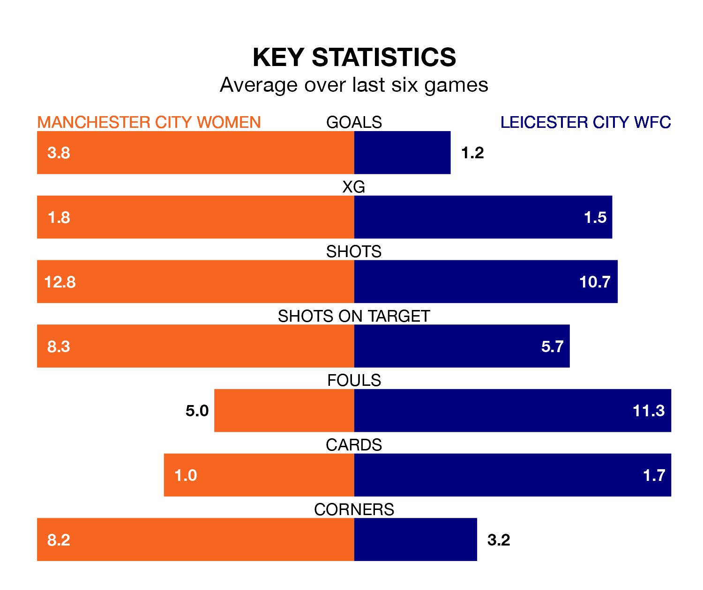

Manchester City Women host Leicester City WFC at the Academy Stadium on Sunday lunchtime on the back of six consecutive wins in FA Women's Super League.
It means Manchester City have picked up the maximum 18 points from their last six games, and they face a Leicester City WFC side who also won their last match, and have collected six points from the last possible 18.
With 33 goals in 12 games so far this season, Manchester City are the league's second-highest scorers with 2.8 goals per game. And they are conceding fewer than average, letting in eight goals at a rate of 0.7 per game.
Leicester City WFC, meanwhile, are below average scorers, with 1.3 goals per game, compared to a league average of 1.7. They have conceded 1.8 goals per game.
In Khadija Monifa Shaw, City have the league's most on-form striker so far this season. She has notched 13 goals in 11 appearances.
The away team's top scorers, with four goals in 12 games each, are Jutta Rantala and Lena Petermann.
The hosts are second in the table after 12 games, of which they have won nine and drawn one, earning 28 points.
Leicester City WFC are five places behind Manchester City in seventh, with three wins and four draws putting them on 13 points.
In the last 10 years, Manchester City and Leicester City WFC have played each other on 12 occasions. Manchester City won 11 of them and they drew once.
On average, City scored 3.3 goals and Leicester City WFC 0.3 in those matches.
Their last meeting was on November 22, when they played out a 2-2 draw.
Manchester City's last match was on Sunday, a 2-0 win against Tottenham Hotspur Women, with Amy Turner (own goal) and Shaw getting the goals for City.
Leicester City WFC beat Everton Women 1-0 last time out, also on January 28, with Janice Cayman on the scoresheet.
Updated: 13:20 (UTC), 29/01/24